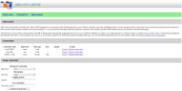
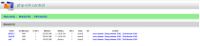
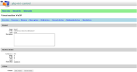
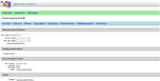
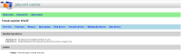
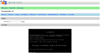

Screenshots
Click on the thumbnail to see the full screenshot.
|  |
Click to the image to see Virtual Machine Controller main page where you can see the information related to the php-virt-control project as well as you can define the connection to the hypervisor with option to save the option and enable debug logging. When you enter a new connection information leave the log file field empty to disable logging and/or leave the connection name field empty not to save the connection. The connection is being saved the the storage defined in the init script called init.php. |
|  |
Click to the image to see Virtual Machine Controller domain list page. This is the list of the virtual domains (guests) available on the connection. You can start/stop/destroy domains using this page and also dump the XML configuration for the domain as well as edit the XML configuration of the domain. |
|  |
Click to the image to see Virtual Machine Controller machine details overview page. You can change the information there and click Apply changes button to change the information about features like APIC, ACPI, PAE and HAP as well as description of the domain and clock offset. Clock offset can be either localtime (usually for Windows guests) or UTC (for Linux guest). |
|  |
Click to the image to see Virtual Machine Controller domain network information page. On the screenshot you can see both form for adding the network interface card as well as information about the currently existing card set up for the guest. |
|  |
Click to the image to see Virtual Machine Controller domain host devices page. This page is currently read-only so you can only see the PCI and USB devices on this page with no modifications possible there. |
|  |
Click to the image to see Virtual Machine Controller domain screenshot page. This page is currently read-only with experimental support for VNC protocol (when enabled in the init script called init.php). You can see the domain screenshot there if your libvirt-php supports screenshots. Screenshot support is being managed by the external utility called the gvnccapture which is the part of gtk-vnc widget/package. |